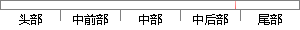

首先要衷心感谢导师王桂玲和冯胜老师。
片段位置图

相似结果|
相似片段 1：—agefetus．ObstetOyn col，1987，69，63l一635．47致谢谨此论文完成之际，我首先要衷心感谢我的导师常才教授三年来在科研、学习和工作中给予我的精心培养、悉心指导及细心关怀。导师丰富
相似片段 2：指导和无私关爱的导师。首先要感谢我的家人，是你们的无私关爱，理解与支持，才使我的求学道路平坦无忧。衷心感谢我的导师王勤美教授，他严谨求实的治学态度、渊博的学识、高度的敬业精神、诲人不倦的高尚师德
相似片段 3：的学位论文。本人保证遵守上述规定。作者签名：日 期：导师签名：日期：三副：』．岁。致谢时光荏苒，在论文即将完成之际，首先要感谢我的导师张牧老师。三年来，导师渊博的专业知识，严谨的治学态度，精益求精
相似片段 4：):313-558. Simac C. et al,致 谢 木论文能够按期完成，首先要衷心感谢我的导师李雅杰教授，在我读研究生期间给予了我辛勤的教诲和悉心的关怀，让我的实验得以如期顺利完成;还要衷心感谢王凯慧教授
|
※ 片段修改建议 ※
近似词参考：- 老师：教员 先生
系统自动生成语句：首先要衷心感谢导师王桂玲和冯胜教员。
注：本片段修改建议为系统自动生成，仅供参考。